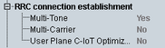

RRC Connection Establishment
The UE capability information in this section is received during the RRC connection establishment, before authentication.

RRC connection capability info
Indicates whether the UE supports NPUSCH multi-tone transmissions.
This information is received in an RRC connection request.
Remote command:Indicates whether the UE supports multi-carrier operation.
This information is received in an RRC connection request.
Remote command:Indicates whether the UE supports user plane C-IoT EPS optimization.
This information is received in an RRC connection setup complete message.
Remote command: